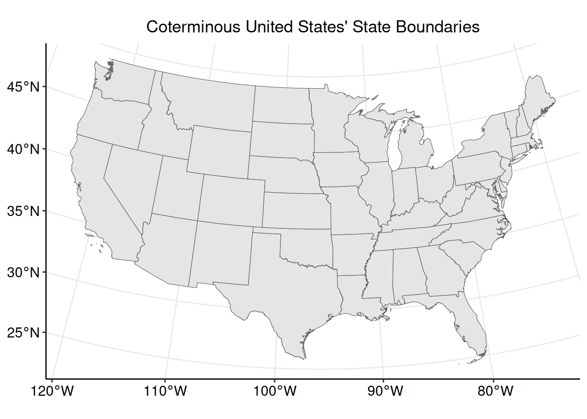

3 Polygon Data


Polygon Data Access, Preparation, and Exploratory Analysis in R
Date Modified: August 16, 2024
Authors: Mitchell Manware  , Kyle P. Messier
, Kyle P. Messier 
Key Terms: Geospatial Data, Wildfire
Programming Language: R
3.1 Introduction
Wildfire smoke plume coverage data from the United States National Oceanic and Atmospheric Administration (NOAA) will be used to demonstrate using polygon data. This tutorial will cover polygon data with both the sf (1) and terra (9) packages separately, but the steps for accessing, downloading, and unzipping the data is the same for both packages.
This tutorial will demonstrate the following steps with polygon data in R:
- Downloading data from a URL
- Importing data
- Checking data type, structure, and class
- Reclassifying data
- Computing summary and zonal statistics
- Plotting individual and multiple data sets
The exploratory analyses in this unit are designed for educational purposes only. The results of the following analyses are not peer-reviewed findings, nor are they based on any hypotheses.
3.2 Access, Download, and Unzip
The website URL where the NOAA wildfire smoke plume data exists is date-specific, meaning there is a unique URL for each daily data set. For the purpose of these exploratory analyses, wildfire smoke plume data from September 1, 2023 will be used.
Define three variables for day, month, and year according to the date of interest.
The utils::download.file() function downloads the file according to the defined URL and destination file.
Multiple chunks of code in this tutorial will contain ./dataset/, a fixed directory path to run the tutorial code. To run the code on your machine, substitute ./dataset/ with the file path where you would like to store the tutorial data.
url_noaa <- paste0(
"https://satepsanone.nesdis.noaa.gov/pub/FIRE/web/HMS/Smoke_Polygons",
"/Shapefile/",
year,
"/",
month,
"/hms_smoke",
year,
month,
day,
".zip"
)
destination_noaa <- paste0(
"./dataset/noaa/noaa_smoke",
year,
month,
day,
".zip"
)
download.file(
url_noaa,
destination_noaa
)The file downloaded from the NOAA website is a .zip file. Zip files need to be unzipped (decompressed) in order to access the data within. Unzip the NOAA wildfire smoke plume coverage file with utils::unzip().
Unzipping a .zip file will decompress the contents within. Spatial data sets can be very large (i.e., > 1 GB), so check the size of the data before unzipping on your machine.
The numeric value size of each file is listed under Length.
## Name Length Date
## 1 hms_smoke20230901.shp 29796 2023-09-02 11:19:00
## 2 hms_smoke20230901.shx 564 2023-09-02 11:19:00
## 3 hms_smoke20230901.dbf 3177 2023-09-02 11:19:00
## 4 hms_smoke20230901.prj 145 2023-09-02 11:19:00After inspecting the file sizes, unzip noaa_smoke20230901.zip.
Inspecting the file with utils::unzip(list = TRUE) returned the size of the file, but also the name of the data file of interest. The desired data file can also be identified with list.files().
## [1] "hms_smoke20230901.dbf" "hms_smoke20230901.prj" "hms_smoke20230901.shp"
## [4] "hms_smoke20230901.shx" "noaa_smoke20230901.zip"Listing the contents of the unzipped file reveals four individual files. The data to be imported is stored in the hms_smoke20230901.shp, but the other files contain important information for the .shp file.
Deleting any of the supporting files (i.e., *.dbf, *.prj, or *.shx) will disrupt the data import.
3.3 Data Preparation with sf
This section will focus on exploratory analyses with polygon data using the sf package.
3.3.1 Import
Now that the contents of the zip file have been saved on your machine and the data file of interest has been identified, import the data with sf::st_read().
Although the supporting files are required to import a shapefile, only the file ending in .shp needs to be imported
## Reading layer `hms_smoke20230901' from data source
## `/home/runner/work/PCOR_bookdown_tools/PCOR_bookdown_tools/dataset/noaa/hms_smoke20230901.shp'
## using driver `ESRI Shapefile'
## Simple feature collection with 58 features and 4 fields
## Geometry type: POLYGON
## Dimension: XY
## Bounding box: xmin: -149.8003 ymin: 13.58187 xmax: -13.8847 ymax: 75.17942
## Geodetic CRS: WGS 84Importing hms_smoke20230901.shp does not return a Warning: message because the data set has native spatial features, and is therefore imported as an sf object.
3.3.2 Inspect Structure
Inspect the structure of smoke_sf to see its class, column names, column classes, and the first two (specified by vec.len = 2) data points.
## Classes 'sf' and 'data.frame': 58 obs. of 5 variables:
## $ Satellite: chr "GOES-EAST" "GOES-EAST" ...
## $ Start : chr "2023244 0900" "2023244 1300" ...
## $ End : chr "2023244 1300" "2023244 1700" ...
## $ Density : chr "Light" "Light" ...
## $ geometry :sfc_POLYGON of length 58; first list element: List of 1
## ..$ : num [1:211, 1:2] -51.4 -48.8 ...
## ..- attr(*, "class")= chr [1:3] "XY" "POLYGON" ...
## - attr(*, "sf_column")= chr "geometry"
## - attr(*, "agr")= Factor w/ 3 levels "constant","aggregate",..: NA NA NA NA
## ..- attr(*, "names")= chr [1:4] "Satellite" "Start" ...As mentioned previously, the smoke_sf data set has native spatial features. These are reflected by the data set having classes of sf and data.frame, and the $geometry feature.
## [1] "sf" "data.frame"3.3.3 Reclassify
The main parameter of interest in this data set is $Density, which discretely categorizes each wildfire smoke plume as “Light”, “Medium”, or “Heavy”. Checking its class shows that $Density is class character.
## [1] "character"Nominal data, data without fixed order or rank system, can be stored as class character (i.e., State names). However, it is best to store ordinal data as class factor for conducting analyses in R.
Converting data from class character to class factor can be done with factor(). The levels = c() argument in the function specifies both the level names and the ranked order of the levels.
Check the class of $Density again to ensure proper reclassification.
## [1] "factor"3.3.4 Coordinate Reference System and Projection
Check the coordinate reference system of an sf object with sf::st_crs().
## Coordinate Reference System:
## User input: WGS 84
## wkt:
## GEOGCRS["WGS 84",
## DATUM["World Geodetic System 1984",
## ELLIPSOID["WGS 84",6378137,298.257223563,
## LENGTHUNIT["metre",1]]],
## PRIMEM["Greenwich",0,
## ANGLEUNIT["degree",0.0174532925199433]],
## CS[ellipsoidal,2],
## AXIS["latitude",north,
## ORDER[1],
## ANGLEUNIT["degree",0.0174532925199433]],
## AXIS["longitude",east,
## ORDER[2],
## ANGLEUNIT["degree",0.0174532925199433]],
## ID["EPSG",4326]]smoke_sf has a native coordinate reference system which was imported during the sf::st_read() step. The area of interest for these exploratory analyses is the conterminous United States, so we can transform smoke_sf to the Albers Equal Area projected coordinate system (EPSG code: 5070).
3.4 Exploratory Analysis with sf
3.4.1 Plot (Single)
With the data prepared, plot the wildfire smoke plume polygons with ggplot2::ggplot().
Now that the parameters of interest and coordinate reference system have been prepared, create a plot with ggplot2::ggplot(). Identifying the data set to be plotted within the geom_sf() argument informs the function that the data is an sf object.
ggplot2::ggplot() +
ggplot2::geom_sf(
data = smoke_sf,
aes(fill = Density)
) +
ggplot2::scale_fill_manual("Smoke Density",
values = c("lightgreen", "lightgoldenrod", "tomato")
) +
ggplot2::ggtitle("Wildfire Smoke Plumes") +
ggpubr::theme_pubr(legend = "bottom") +
ggplot2::theme(plot.title = element_text(hjust = 0.5)) +
ggpubr::grids()The wildfire smoke plume polygons are clearly visible and colored according to their individual smoke density classification. This plot, however, is difficult to interpret for two reasons. First, there are multiple polygons for each smoke density classification. Multiple borders and overlapping polygons with the same smoke density type can be confusing. To make the polygons more clear, individual polygons for each smoke density classification can be combined.
For the purposes of these exploratory analyses, the satellite travelling direction and time of collection will be ignored.
3.4.2 Union
Individual polygons can be unioned (combined) into one multi-part polygon with sf::st_union. The group_by(Density) argument specifies that the polygons should be combined based on the value stored in $Density. Adding the Date = paste0(... argument within the dplyr::summarise() function creates a parameter to store the date based on the year, month, and day of the data.
library(dplyr)
smoke_sf_density <-
smoke_sf %>%
dplyr::group_by(Density) %>%
dplyr::summarise(
geometry = sf::st_union(geometry),
Date = paste0(
year,
month,
day
)
)The resulting data set contains three multi-polygons, a column for the smoke plume classification, and a column for the date.
## Simple feature collection with 3 features and 2 fields
## Geometry type: MULTIPOLYGON
## Dimension: XY
## Bounding box: xmin: -3260097 ymin: -1003068 xmax: 5993172 ymax: 6112717
## Projected CRS: NAD83 / Conus Albers
## # A tibble: 3 × 3
## Density geometry Date
## <fct> <MULTIPOLYGON [m]> <chr>
## 1 Light (((84357.22 1261681, 98970.86 1259451, 125379.3 1249659, 126431… 2023…
## 2 Medium (((-1999749 1735020, -2007784 1687042, -2022469 1654525, -20389… 2023…
## 3 Heavy (((45040.64 855923.7, 51735 842331, 52850.75 825751, 53427.35 8… 2023…Creating a new plot with smoke_sf_density.
ggplot2::ggplot() +
ggplot2::geom_sf(
data = smoke_sf_density,
aes(fill = Density)
) +
ggplot2::scale_fill_manual("Smoke Density",
values = c("lightgreen", "lightgoldenrod", "tomato")
) +
ggplot2::ggtitle("Wildfire Smoke Plumes (unioned)") +
ggpubr::theme_pubr(legend = "bottom") +
ggplot2::theme(plot.title = element_text(hjust = 0.5)) +
ggpubr::grids()The plot is still difficult to interpret because it lacks geospatial context. The grid lines provide latitude and longitude references, but physical or geopolitical boundaries can help show where the wildfire smoke plumes are relative to the study area of interest. To provide geospatial context to the wildfire smoke plume polygons, we can add the United States state boundary polygons to the plot.
3.4.3 Plot (Multiple)
The steps taken to access, download, unzip, and import the United States state boundary data are the same as those taken for the wildfire smoke plume coverage data. Refer to Sections Access, Download, and Unzip and Import for detailed descriptions.
url_states <-
"https://www2.census.gov/geo/tiger/GENZ2018/shp/cb_2018_us_state_500k.zip"
destination_states <- "./dataset/states/states.zip"
download.file(
url_states,
destination_states
)## Name Length Date
## 1 cb_2018_us_state_500k.shp.ea.iso.xml 17905 2019-04-15 12:48:00
## 2 cb_2018_us_state_500k.shp.iso.xml 32982 2019-04-15 12:48:00
## 3 cb_2018_us_state_500k.shp 4721868 2019-04-15 11:55:00
## 4 cb_2018_us_state_500k.shx 548 2019-04-15 11:55:00
## 5 cb_2018_us_state_500k.dbf 9058 2019-04-15 11:55:00
## 6 cb_2018_us_state_500k.prj 165 2019-04-15 11:55:00
## 7 cb_2018_us_state_500k.cpg 5 2019-04-15 11:55:00## [1] "cb_2018_us_state_500k.cpg"
## [2] "cb_2018_us_state_500k.dbf"
## [3] "cb_2018_us_state_500k.prj"
## [4] "cb_2018_us_state_500k.shp"
## [5] "cb_2018_us_state_500k.shp.ea.iso.xml"
## [6] "cb_2018_us_state_500k.shp.iso.xml"
## [7] "cb_2018_us_state_500k.shx"
## [8] "states.zip"## Reading layer `cb_2018_us_state_500k' from data source
## `/home/runner/work/PCOR_bookdown_tools/PCOR_bookdown_tools/dataset/states/cb_2018_us_state_500k.shp'
## using driver `ESRI Shapefile'
## Simple feature collection with 56 features and 9 fields
## Geometry type: MULTIPOLYGON
## Dimension: XY
## Bounding box: xmin: -179.1489 ymin: -14.5487 xmax: 179.7785 ymax: 71.36516
## Geodetic CRS: NAD83Inspect the structure of states_sf.
## Classes 'sf' and 'data.frame': 56 obs. of 10 variables:
## $ STATEFP : chr "28" "37" ...
## $ STATENS : chr "01779790" "01027616" ...
## $ AFFGEOID: chr "0400000US28" "0400000US37" ...
## $ GEOID : chr "28" "37" ...
## $ STUSPS : chr "MS" "NC" ...
## $ NAME : chr "Mississippi" "North Carolina" ...
## $ LSAD : chr "00" "00" ...
## $ ALAND : num 1.22e+11 1.26e+11 ...
## $ AWATER : num 3.93e+09 1.35e+10 ...
## $ geometry:sfc_MULTIPOLYGON of length 56; first list element: List of 8
## ..$ :List of 1
## .. ..$ : num [1:16, 1:2] -88.5 -88.5 ...
## ..$ :List of 1
## .. ..$ : num [1:27, 1:2] -88.6 -88.6 ...
## ..$ :List of 1
## .. ..$ : num [1:27, 1:2] -88.8 -88.8 ...
## ..$ :List of 1
## .. ..$ : num [1:19, 1:2] -88.9 -88.9 ...
## ..$ :List of 1
## .. ..$ : num [1:8, 1:2] -88.9 -88.9 ...
## ..$ :List of 1
## .. ..$ : num [1:12, 1:2] -89 -89 ...
## ..$ :List of 1
## .. ..$ : num [1:27, 1:2] -89.1 -89.1 ...
## ..$ :List of 1
## .. ..$ : num [1:2713, 1:2] -91.7 -91.7 ...
## ..- attr(*, "class")= chr [1:3] "XY" "MULTIPOLYGON" ...
## - attr(*, "sf_column")= chr "geometry"
## - attr(*, "agr")= Factor w/ 3 levels "constant","aggregate",..: NA NA NA NA NA ...
## ..- attr(*, "names")= chr [1:9] "STATEFP" "STATENS" ...For the purpose of these exploratory analyses, only the conterminous United States (CONUS) will be used. Subset states_sf to remove Alaska, Hawaii, and United States territories.
remove <- c(
"Alaska",
"Hawaii",
"Puerto Rico",
"United States Virgin Islands",
"Commonwealth of the Northern Mariana Islands",
"Guam",
"American Samoa"
)
conus_sf <- subset(
states_sf,
!NAME %in% remove
)Check the coordinate reference system.
## Coordinate Reference System:
## User input: NAD83
## wkt:
## GEOGCRS["NAD83",
## DATUM["North American Datum 1983",
## ELLIPSOID["GRS 1980",6378137,298.257222101,
## LENGTHUNIT["metre",1]]],
## PRIMEM["Greenwich",0,
## ANGLEUNIT["degree",0.0174532925199433]],
## CS[ellipsoidal,2],
## AXIS["latitude",north,
## ORDER[1],
## ANGLEUNIT["degree",0.0174532925199433]],
## AXIS["longitude",east,
## ORDER[2],
## ANGLEUNIT["degree",0.0174532925199433]],
## ID["EPSG",4269]]When analyzing multiple spatial data sets together, all data sets must have the same coordinate reference system or projected coordinate system.
Transform conus_sf to match the projected coordinate system of the smoke_sf_density data set.
Plot the conterminous United States state boundaries.
ggplot2::ggplot() +
ggplot2::geom_sf(data = conus_sf) +
ggplot2::ggtitle("Coterminous United States' State Boundaries") +
ggpubr::theme_pubr() +
ggplot2::theme(plot.title = element_text(hjust = 0.5)) +
ggpubr::grids()
With the wildfire smoke plume and conterminous United States polygons imported and prepared, ensure that they have the same coordinate reference system.
## [1] TRUECreate a plot which shows the distribution of wildfire smoke plumes over the conterminous United States state boundaries.
ggplot2::ggplot() +
ggplot2::geom_sf(
data = smoke_sf_density,
aes(fill = Density)
) +
ggplot2::scale_fill_manual("Smoke Density",
values = c("lightgreen", "lightgoldenrod", "tomato")
) +
ggplot2::geom_sf(
data = conus_sf,
fill = "transparent"
) +
ggplot2::ggtitle("Wildfire Smoke Plumes (with states)") +
ggpubr::theme_pubr(legend = "bottom") +
ggplot2::theme(plot.title = element_text(hjust = 0.5)) +
ggpubr::grids()This plot provides important geospatial context for understanding where the wildfire smoke plumes are in relation to the study area of interest.
3.4.4 Crop
The sf::st_crop() function can be used to reduce the extent of a set of polygons to a specific rectangle, typically the bounding box of another spatial data set. In this example we can crop the smoke_sf_density polygons to the bounding box surrounding the conterminous United States.
## Warning: attribute variables are assumed to be spatially constant throughout
## all geometriesPlot the cropped wildfire smoke plume polygons and the conterminous United States state boundaries.
ggplot2::ggplot() +
ggplot2::geom_sf(
data = smoke_sf_crop,
aes(fill = Density)
) +
ggplot2::scale_fill_manual("Smoke Density",
values = c("lightgreen", "lightgoldenrod", "tomato")
) +
ggplot2::geom_sf(
data = conus_sf,
fill = "transparent"
) +
ggplot2::ggtitle("Wildfire Smoke Plumes (cropped)") +
ggpubr::theme_pubr(legend = "bottom") +
ggplot2::theme(plot.title = element_text(hjust = 0.5)) +
ggpubr::grids()3.5 Data Preparation with terra
This section will focus on exploratory analyses with polygon data using the terra package (9).
3.5.1 Import
Now that the contents of the zip files have been saved on your machine and the data files of interest have been identified, import both the wildfire smoke plume coverage data and the United States state boundary data with terra::vect().
See Sections Access, Download, and Unzip and Plot (Multiple) for obtaining the wildfire smoke plume coverage and United States state boundary data sets, respectively.
3.5.2 Inspect Structure
Inspect the structures of smoke_t and states_t to see their classes, column names, and column classes.
## class : SpatVector
## geometry : polygons
## dimensions : 58, 4 (geometries, attributes)
## extent : -149.8003, -13.8847, 13.58187, 75.17942 (xmin, xmax, ymin, ymax)
## source : hms_smoke20230901.shp
## coord. ref. : lon/lat WGS 84 (EPSG:4326)
## names : Satellite Start End Density
## type : <chr> <chr> <chr> <chr>
## values : GOES-EAST 2023244 0900 2023244 1300 Light
## GOES-EAST 2023244 1300 2023244 1700 Light
## GOES-EAST 2023244 1300 2023244 1700 Light## class : SpatVector
## geometry : polygons
## dimensions : 56, 9 (geometries, attributes)
## extent : -179.1489, 179.7785, -14.5487, 71.36516 (xmin, xmax, ymin, ymax)
## source : cb_2018_us_state_500k.shp
## coord. ref. : lon/lat NAD83 (EPSG:4269)
## names : STATEFP STATENS AFFGEOID GEOID STUSPS NAME LSAD
## type : <chr> <chr> <chr> <chr> <chr> <chr> <chr>
## values : 28 01779790 0400000US28 28 MS Mississippi 00
## 37 01027616 0400000US37 37 NC North Carolina 00
## 40 01102857 0400000US40 40 OK Oklahoma 00
## ALAND AWATER
## <num> <num>
## 1.215e+11 3.927e+09
## 1.259e+11 1.347e+10
## 1.777e+11 3.375e+09Both smoke_t and states_t have native spatial features. These are reflected by the type of spatial data in geometry:, and the spatial attributes extent: and coord. ref.:
3.5.3 Reclassify
The main parameter of interest in this data set is $Density, which discretely categorizes each wildfire smoke plume as “Light”, “Medium”, or “Heavy”. Checking its class shows that $Density is class character.
## [1] "character"Nominal data, data without fixed order or rank system, can be stored as class character (i.e., State names). However, it is best to store ordinal data as class factor for conducting analyses in R.
Converting data from class character to class factor can be done with factor(). The levels = c() argument in the function specifies both the level names and the ranked order of the levels.
Check the class of $Density again to ensure proper reclassification.
## [1] "factor"For the purpose of these exploratory analyses, only the conterminous United States (CONUS) will be used. Subset states_t to remove Alaska, Hawaii, and the United States territories.
3.5.4 Coordinate Reference System and Projection
Check the coordinate reference systems of SpatVector objects with terra::crs().
## name authority code area extent
## 1 WGS 84 EPSG 4326 <NA> NA, NA, ....## name authority code area extent
## 1 NAD83 EPSG 4269 <NA> NA, NA, ....Both data sets have native coordinate reference systems which were imported during the terra::vect() step. The two data sets, however, have different coordinate reference systems from each other. The area of interest for these exploratory analyses is the conterminous United States, so we can project smoke_t and conus_t to the Albers Equal Area projected coordinate system (EPSG code: 5070).
smoke_t_p <- terra::project(
smoke_t,
"EPSG:5070"
)
conus_t_p <- terra::project(
conus_t,
"EPSG:5070"
)Although both data sets were transformed to the same projected coordinate system, it is important to ensure that all data sets have the same coordinate reference system or projected coordinate system.
## [1] TRUE3.6 Exploratory Analysis with terra
3.6.1 Plot (Multiple)
Plot both data sets together in one plot with ggplot2::ggplot().
Now that the parameters of interest and coordinate reference systems have been prepared, create a plot with ggplot2::ggplot(). Identifying the data sets to be plotted within the tidyterra::geom_spatvector() arguments informs the function that the data are SpatVector objects (10).
library(tidyterra)
ggplot2::ggplot() +
tidyterra::geom_spatvector(
data = smoke_t_p,
aes(fill = Density)
) +
ggplot2::scale_fill_manual("Smoke Density",
values = c("lightgreen", "lightgoldenrod", "tomato")
) +
tidyterra::geom_spatvector(
data = conus_t_p,
fill = "transparent"
) +
ggplot2::ggtitle("Wildfire Smoke Plumes (with states)") +
ggpubr::theme_pubr(legend = "bottom") +
ggplot2::theme(plot.title = element_text(hjust = 0.5)) +
ggpubr::grids()
The wildfire smoke plume polygons are clearly visible and colored according to their individual smoke density classification. The plot, however, is difficult to interpret because there are multiple polygons for each smoke density classification. Multiple borders and overlapping polygons with the same smoke density type can be confusing. To make the polygons more clear, individual polygons for each smoke density classification can be combined.
For the purposes of these exploratory analyses, the satellite travelling direction and time of collection will be ignored.
3.6.2 Aggregate
Individual polygons an be aggregated (combined) into one multi-part polygon with terra::aggregate(). The by = "Density" argument specifies that the polygons should be combined based on the value stored in $Density.
Aggregating the polygons based on the values stored in the $Density column can result in the other columns containing NA values. To remove these columns, subset smoke_t_density to remove $Satellite, $Start, and $End.
The resulting data set contains three multi-polygons, a column for the smoke plume classification, and a count of the number of individual polygons that were aggregated to create the multi-polygon. This last column, $agg_n is automatically calculated by the terra::aggregate() function.
## class : SpatVector
## geometry : polygons
## dimensions : 3, 2 (geometries, attributes)
## extent : -3260097, 5993172, -1003068, 6112717 (xmin, xmax, ymin, ymax)
## coord. ref. : NAD83 / Conus Albers (EPSG:5070)
## names : Density agg_n
## type : <fact> <int>
## values : Light 37
## Medium 15
## Heavy 6Create a new plot with smoke_t_density.
ggplot2::ggplot() +
tidyterra::geom_spatvector(
data = smoke_t_density,
aes(fill = Density)
) +
ggplot2::scale_fill_manual("Smoke Density",
values = c("lightgreen", "lightgoldenrod", "tomato")
) +
tidyterra::geom_spatvector(
data = conus_t_p,
fill = "transparent"
) +
ggplot2::ggtitle("Wildfire Smoke Plumes (aggregated)") +
ggpubr::theme_pubr(legend = "bottom") +
ggplot2::theme(plot.title = element_text(hjust = 0.5)) +
ggpubr::grids()3.6.3 Crop
The terra::crop() function can be used to reduce SpatVector to an area determined by another SpatVector. In this example, we can crop the smoke_t_density polygons to the conterminous United States state boundaries.
Overlapping or self-intersecting polygons can occur with complex geometries or during data processing and transformation. Applying a negative buffer can help resolve these issues by slightly reducing the size of the polygons, thus eliminating problematic overlaps and intersections. This buffering adjustedment may affect statistical analyses, and therefore should be performed with caution.
Plot the cropped wildfire smoke plume polygons and the conterminous United States state boundaries.
ggplot2::ggplot() +
tidyterra::geom_spatvector(
data = smoke_t_crop,
aes(fill = Density)
) +
ggplot2::scale_fill_manual("Smoke Density",
values = c("lightgreen", "lightgoldenrod", "tomato")
) +
tidyterra::geom_spatvector(
data = conus_t_p,
fill = "transparent"
) +
ggplot2::ggtitle("Wildfire Smoke Plumes (cropped)") +
ggpubr::theme_pubr(legend = "bottom") +
ggplot2::theme(
plot.title = element_text(hjust = 0.5),
axis.line = element_blank(),
axis.ticks = element_blank(),
axis.text = element_blank()
)3.6.4 Zonal Statistics
Looking closely at the previous plot, it is clear that wildfire smoke plumes cover each state differently. The terra package can be used to identify which states are covered by each classification of wildfire smoke plumes.
The terra::relate() function can be used to identify spatial relationships between two SpatVector objects. The relation = "intersects" argument logically identifies if any portion of each state is or is not covered by each of the three wildfire smoke plume classification multi-polygons.
The output of terra::relate() is a wide matrix. The nested data.frame() and t() wrappers convert the output from a wide matrix to a long data frame, which is required to combine the results with the conus_t data set.
conus_smoke <- data.frame(
t(
terra::relate(
smoke_t_density,
conus_t_p,
relation = "intersects"
)
)
)Set the column names of conus_smoke to match the smoke density classifications.
The order of the columns in conus_smoke are based on the ordered factor levels in smoke_t_density$Density (see Section Reclassify).
Combine the wildfire smoke plume indicator data frame with the the conterminous United States state boundaries data.
The conus_t_p data set now contains separate columns indicating the presence or absence of “Light”, “Medium”, and “Heavy” wildfire smoke plumes for each conterminous state.
## [1] "STATEFP" "STATENS" "AFFGEOID" "GEOID" "STUSPS" "NAME"
## [7] "LSAD" "ALAND" "AWATER" "Light" "Medium" "Heavy"3.6.5 Plot (for Loop)
A for loop can be used to create indicator plots for each wildfire smoke plume classification. The layout of a for loop can look complicated, but it simply applies the same set of functions to a given list of inputs.
The list of inputs must first be created. As the goal is to plot each of the wildfire smoke plume density classifications, create a character vector of the three classification names.
This “list of inputs” must first be created. Store the three wildfire smoke plume classifications in a vector of class character.
Create a for loop that creates a plot for each wildfire smoke plume density stored within dens_c.
Code line 1 tells the for loop to apply the following functions to each observation in dens_c.
Code lines 3 through 9 define the plotting colors based on the wildfire smoke plume classification (dens_c[d]). As in previous plots, “Light” smoke plumes will be colored green, “Medium” smoke plumes will be covered yellow, and “Heavy” smoke plumes will be colored red.
Code lines 12 through 32 create the plot based on the wildfire smoke plume classification (dens_c[d]), and previously defined plotting colors (color_values).
for (d in seq_along(dens_c)) {
# define color palette based on smoke density
if (dens_c[d] == "Light") {
color_values <- c("lightgrey", "lightgreen")
} else if (dens_c[d] == "Medium") {
color_values <- c("lightgrey", "lightgoldenrod")
} else if (dens_c[d] == "Heavy") {
color_values <- c("lightgrey", "tomato")
}
# create plot
print(
ggplot2::ggplot() +
tidyterra::geom_spatvector(
data = conus_t_p,
aes_string(fill = dens_c[d])
) +
ggplot2::scale_fill_manual(
paste0(
dens_c[d],
" Smoke Plume Coverage Present"
),
values = color_values
) +
ggpubr::theme_pubr(legend = "bottom") +
ggplot2::theme(
plot.title = element_text(hjust = 0.5),
axis.line = element_blank(),
axis.ticks = element_blank(),
axis.text = element_blank()
)
)
}